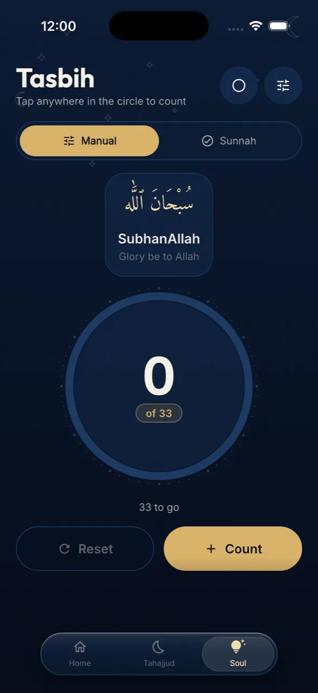
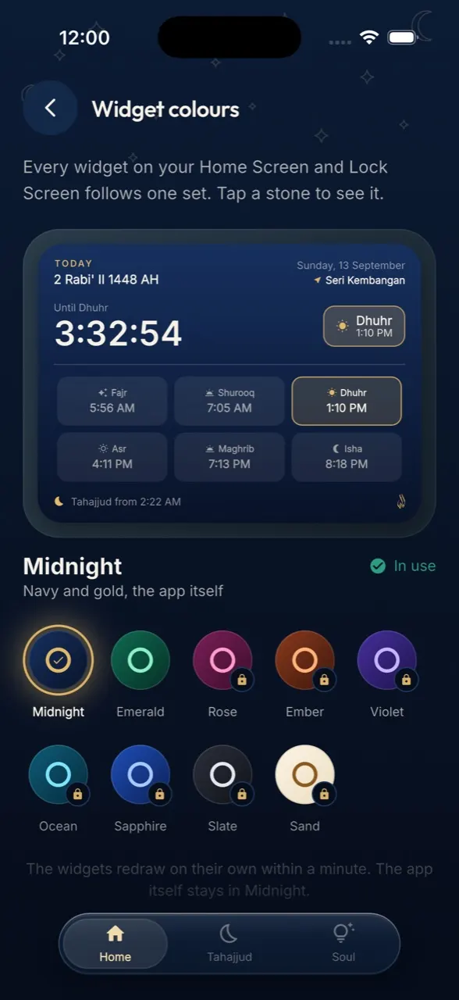

Tasbih
Seven ways to count, from a gold ring to rose quartz beads. Tap too fast and it asks you to slow down.
A prayer app for iPhone and Android
One day, five prayers, and a phone that keeps them with you.
Scroll, and the day begins
05:52Fajr الفجر
Layla Pro opens on the day drawn as one arc, Fajr to Isha. The sun sits where it really is, the next prayer is lit, and a countdown runs beneath it. Every time is worked out on your phone, from where you stand.
13:09Dhuhr الظهر
When the prayer comes in, Prayer Focus holds the apps you picked for thirty minutes. Open one and the prayer screen covers it. Calls are never held, and Layla Pro itself always opens. On iPhone it is a Screen Time shield; on Android it is a firm nudge you can step past.
16:23Asr العصر
The Madinah mushaf, all 604 pages as they are printed, with IndoPak and Tajweed beside it. Press play and the word being recited lights in gold as you hear it. Eighteen reciters, over a hundred translations, and any surah ready offline.
19:12Maghrib المغرب
Share a six-letter code and a friend appears as five dots, one for each prayer, filling as their day is prayed. Send a verse, say MashaAllah on a milestone, keep a forty-day circle. There is no leaderboard, on purpose.
20:22Isha العشاء
A prayer counts when you confirm it, and with Premium you confirm by scanning your prayer mat. Every day becomes a dot in a year of 365: green for all five, amber for still open, rose for a prayer missed.
02:21The last third التهجد
Layla Pro splits the night from Maghrib to Fajr into thirds and lights the last. Tap “I am praying Tahajjud” and a light appears on the Earth at night, beside everyone else praying. Each light is a five-kilometre area, never a person, and fades after four hours.

Seven ways to count, from a gold ring to rose quartz beads. Tap too fast and it asks you to slow down.
Anxious, tired, lost, hopeful. Pick one and turn a deck of verses chosen for it, each recited.
أَلَا بِذِكْرِ ٱللَّهِ تَطْمَئِنُّ ٱلْقُلُوبُ
One of the ninety-nine each day, with its meaning and where it appears.
ٱلْحَقُّ
Morning, evening, travel and sleep, from the Qur’an and Sunnah, with their sources.

Widgets for the next prayer, the arc, the tracker, a verse and the Qibla, and on iPhone a Live Activity counting the prayer down.
Prayer times, the Qur’an, streaks, friends and Tahajjud cost nothing. Premium adds the mat scan, every counter and widget colours.
I built Layla Pro because my phone kept winning at prayer time. “After this video” became Asr gone, more often than I want to admit.
So I made the app I needed: one that knows when it is time, steps aside when I should pray, and keeps an honest count without turning it into a competition. Every screen, every line of code and every word on this page is mine. If something is wrong, you will be talking to the person who fixes it.
Seven percent of every subscription is set aside for those in need, and I will show where it goes, with receipts.
Aden Zia, Malaysia
Layla Pro is in review on the App Store and Google Play. Leave your email and I will write once, the day it reaches your phone.
One email, on launch day, for the phone you pick. Your address is never shared. Prices are shown in the app, in your currency: monthly, or yearly with two months free.